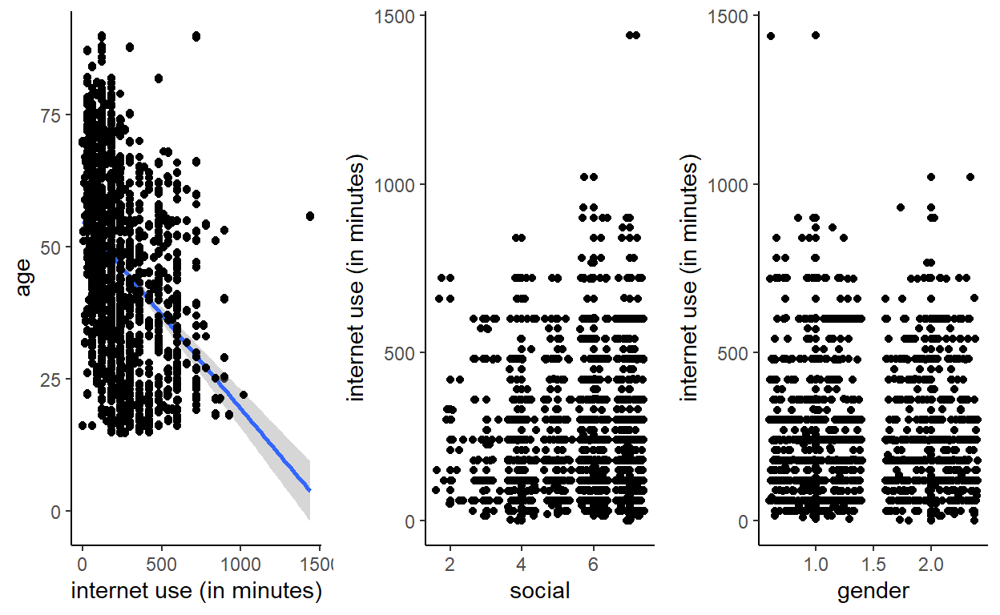
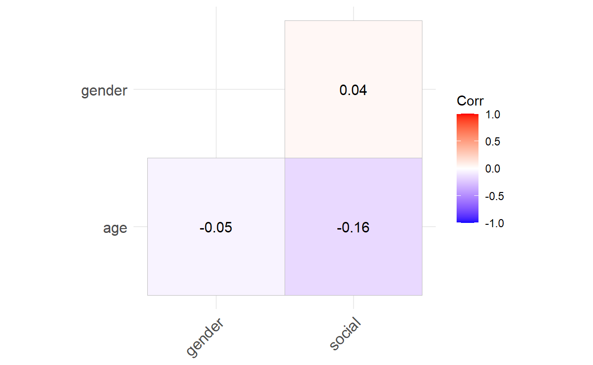
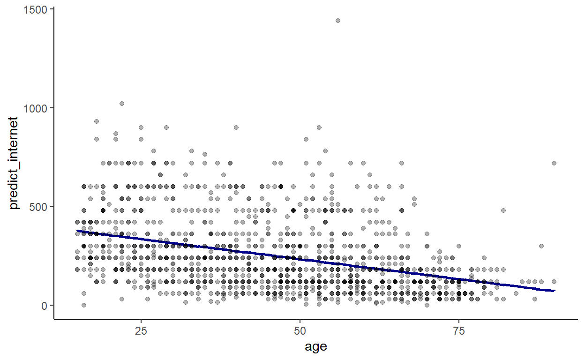
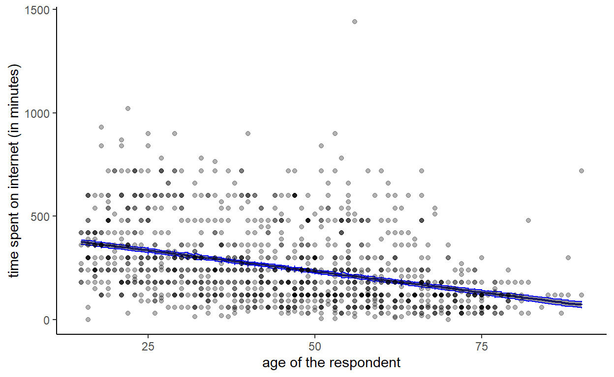

In this Lab I will go through a case study made with the ESS9 dataset. This case study will give you more guidelines on how to filter out the data you are interested in. This case study is based on the workflow of the “data scientist”:
Before collecting any data it is very important to know what we want, what is the question we want to ask. The question will condition the data we will collect and the protocol used to collect it. In this case study I will ask a simple question: what are the drivers of the time spent on internet in Norway?
To answer that specific question I need to think properly about the variables (the independant variables / predictors) which may influence the time spent on internet, which is here my response variable.
Usually, to know which variables to use we would need to look in the literature or ask an expert in the field. Otherwise we could use variables which would not have any real meaning and our interpretation of the results might be misleading.
Here I hypothesize (but I should have looked in the literature or ask an expert!) that the time spent on internet is influenced by:
After asking the question and defining the variables that may be important I need to go out on the field and collect the data! Luckily I do not have to collect the data myself as the ESS9 dataset already have this data.
First of all, I load the libraries and open the dataset:
# Load the libraries
library(tidyverse)
library(broom)
library(cowplot)
library(ggcorrplot)
# Open the dataset
ess <- read_csv('C:/Users/benjamcr/Rproj/GEOG3006/data/ess_round9.csv')The dataset is massive and we need to isolate what we need to get a smaller, more manageable dataset. After glancing at the ESS9 Codebook I see that the variables I am looking for have a certain code:
Finally, I want the data for Norway only. The ESS9 dataset has a column cntry in which NO stands for Norway. You can check this with the function unique:
unique(ess$cntry)
[1] "AT" "BE" "BG" "CH" "CY" "CZ" "DE" "EE" "ES" "FI" "FR" "GB" "HR"
[14] "HU" "IE" "IT" "LT" "LV" "ME" "NL" "NO" "PL" "PT" "RS" "SE" "SI"
[27] "SK"I am now able to make a subset of the ESS9 dataset:
data <- ess %>%
dplyr::filter(cntry == "NO") %>% # I filter only the observatins for Norway
dplyr::select(internet = netustm,
age = agea,
gender = gndr,
social = sclmeet) %>% # I select the variables I am interested in
mutate(gender_recode = ifelse(gender == 1, 0, 1)) %>%
drop_na() # I get rid of all the missing valuesNote that I need to recode the variable
genderwith 0 and 1, This is mainly by security.
Et voilà, these 3 lines of codes reduce the dataset considerably. data is made of only 1298 observations and 4 columns.
We can now begin to explore the relationship between netustm and the predictor variables. We also have to compute the correlation between each predictor variables so the model assumptions are respected (we have seen that in a previous lab).
Note that I use geom_jitter for the categorical variables (namely gender and social), this allow us to have a better overview on how the observations are distributed.
I also use a new function plot_grid from the package cowplot. While non-necessary, this function helps me to have a clean layout for the plots.
a <- ggplot(data, aes(x = internet, y = age)) +
geom_point() +
geom_smooth(method = 'lm') +
geom_jitter() +
theme_classic() +
xlab('internet use (in minutes)')
b <- ggplot(data, aes(x = social, y = internet)) +
geom_point() +
geom_jitter() +
theme_classic() +
ylab('internet use (in minutes)')
c <- ggplot(data, aes(x = gender, y = internet)) +
geom_point() +
geom_jitter() +
theme_classic() +
ylab('internet use (in minutes)')
cowplot::plot_grid(a,b,c, ncol = 3)
From the plots I can expect internet use to be linearly related with the predictor variables:
Now that we have a sense of how our data is distributed we need to confirm our intuition with some modeling. But before, we need to check if the predictor variables are not too correlated with each other:
data %>%
dplyr::select(age, gender, social) %>%
cor(.) %>%
ggcorrplot(., type = "lower", lab = TRUE)
This is the fancy way of getting a correlation matrix, by using ggcorplot. You can also get the exact same result by writing:
data %>%
dplyr::select(age, gender, social) %>%
cor(.)
age gender social
age 1.00000000 -0.05482751 -0.16255562
gender -0.05482751 1.00000000 0.03661748
social -0.16255562 0.03661748 1.00000000Nevertheless, in a report or a scientific paper it is usually better to include more visuals. The correlation matrix show us that the predictor variables are weakly correlated with each other. The statistical model should be able to deal with this.
As said previously, we now need to confirm our intuition regarding the distribution of the variables. This is done with statistical modeling. We can now fit the model:
model <- lm(internet ~ age + gender_recode + social, data = data)
broom::tidy(model)
# A tibble: 4 x 5
term estimate std.error statistic p.value
<chr> <dbl> <dbl> <dbl> <dbl>
1 (Intercept) 435. 28.2 15.4 2.78e-49
2 age -4.05 0.279 -14.5 2.51e-44
3 gender_recode 1.31 9.76 0.134 8.94e- 1
4 social 0.240 3.91 0.0615 9.51e- 1To interpret the model output we can write its equation:
\(internet = \beta_1 + \beta_2 * age + \beta_3 * gender + \beta_4 * social\)
With the estimated parameter values:
\(internet = 435 -4 * age + 1.3 * gender + 0.24 * social\)
The \(\beta_1\) or the intercept is 435. Therefore the model tells us that a person of 0 year with a social index of 0 and being a male spends on average 435 minutes on internet. This interpretation is of course ridiculous and we need to select other values to get a more reasonable interpretation. Take for instance a 15 year old boy who meets his friends once a week (a value of 5 for the predictor social):
\(internet = 435 -4 * 15 + 1.3 * 0 + 0.24 * 5\)
This boy would spend on average 376.2 minutes on internet per day (more than 6 hours). We can directly see that the predictors social and gender have a very low effect on the average time spent on internet as changing them weakly influence the amount of time spent on internet. Take for example a 15 year old girl who meets her friend every day (a value of 7 for the predictor social), she would spend on average 378 minutes on internet according to our model. Only 2 minutes more than her boy counterpart!
We can intuitively guess that age is the most important predictor of internet use in our model as it changes the response internet the most. In fact, a 1 year old increase in the age of the respondent decreases its internet time by 4 minutes. In contrast, a female would spend on average only 1 more minutes than a male. Moreover, meeting the friends more often only increase the internet use by 0.24 minutes, a negligible amount of time.
Note: Some of you who have already done some courses on statistics or quantitative methods may have notice that I do not use the p-value or the term “significant”. We classically say that a variable is “significant” if its p-value < 0.05. Nevertheless the 0.05 value is totally subjective and is only a norm. While p-values and “significancies” can be useful in some context I suggest that you focus on the effect of a variable by interpreting how it changes the response rather than on its p-value.
I am also wondering whether the interaction between the predictors age and gender influence the time spent on the internet. Could older woman spend more time on internet than older men?
The model would now look like:
\(internet = \beta_1 + \beta_2 * age + \beta_3 * gender + \beta_4 * social + \beta_5 * age * gender\)
model2 <- lm(internet ~ age + gender_recode + social + age:gender_recode, data = data)
broom::tidy(model2)
# A tibble: 5 x 5
term estimate std.error statistic p.value
<chr> <dbl> <dbl> <dbl> <dbl>
1 (Intercept) 445. 30.8 14.4 6.34e-44
2 age -4.26 0.376 -11.3 2.47e-28
3 gender_recode -19.8 27.1 -0.728 4.66e- 1
4 social 0.163 3.91 0.0417 9.67e- 1
5 age:gender_recode 0.460 0.553 0.832 4.05e- 1With the estimated parameters we can re-write the model as follow:
\(internet = 444 -4 * age -20 * gender + 0.16 * social + 0.5 * age:gender\)
The effect of gender is now greater than on the first model. However, it needs to be interpreted with the interaction term if we want to see if there is really a difference.
Note: Including
age:genderun-hide or at least “correct” the effect ofgenderand this is a reason why multiple regression analysis is so important and useful.
If we take the example of a 50 year old man who meets his friend once a week and a 50 year old woman who meet her friends once a week too the difference will be now more pronounced.
\(internet_{male, 50yo} = 444 -4 * 50 -20 * 0 + 0.16 * 5 + 0.5 * 50*0\)
\(internet_{male, 50yo} = 245\)
\(internet_{female, 50yo} = 444 -4 * 50 -20 * 1+ 0.16 * 5 + 0.5 * 50*1\)
\(internet_{female, 50yo} = 250\)
The woman would spend on average 5 minutes more on internet than her male counterpart … The difference is not very pronounced. I will therefore stick with model 1.
After modeling we need to discuss the meaning of the result. Interpreting and seeing if a model make sense is a way of validating it: if the model doesn’t make any sense in the real world then we know that something need to be changed. Imagine that \(\beta_3\) which is the coefficient for gender is of 1000. This would mean than a woman would on average spend 16 more hours on internet than a man … This is obviously not possible and would need to revise our model!
Note: a statistical model is stupid and need a person to see if it makes sense or not!
In our case the parameter values make sense as we saw with the few examples I have been through. The variable age is the one which has the most important effect. This is due to the “generational gap”: older people are less use to be on internet while younger people were born with it and, in a way, it is a normal part of their lives: Facebook, Twitter, Instagram, Snapchat …
The model also indicated that the coefficient for gender is positive, even though it doesn’t trigger enormous change in the response. We can hypothesize that female spend a bit more time than male on internet because they are more social, they communicate more with other friends through Messenger or Whatsapp for instance.
In a report or a scientific paper we usually want to highlight the most important result. In my case I want to show how age change the response time spend on internet. While interpreting the coefficient as we did previously is already an important step in communicating the results, it is also very important to include plots as it helps to truly visualize the effect of a variable on another.
First, I need to predict the response internet based on the model output. I can use the function predict. In the code below I create a new column predict_internet which return the predicted internet use based on the variables at a specific row. The predict function basically does what we have previously done when we worked on the examples of the 50 year old woman but for the entire dataset.
data <- data %>%
mutate(predict_internet = predict(model))We can now plot predict_internet with regard to age. We also add the data points to the graph, this helps to see if the model fitted well:
data %>% ggplot(., aes(x = age)) +
geom_line(aes(y = predict_internet), col = 'darkblue', size = 1) +
geom_point(aes(y = internet), alpha = .3) +
theme_classic()
We now clearly see the trend. However, we do not have any uncertainty associated with this trend, which is a shame … The predict function has an argument which is se.fit. If se.fit = TRUE then the function will predict internet and its associated uncertainty. We can create a dataset p containing the predicted use of internet and the standard error which we will add to our dataset:
p <- predict(model, se.fit = TRUE)
data <- data %>% mutate(se = p$se.fit)And we can now plot the results with their associated uncertainty with the function geom_ribbon:
data %>% ggplot(., aes(x = age)) +
geom_line(aes(y = predict_internet), col = 'darkblue', size = 0.75) +
geom_ribbon(aes(ymin = predict_internet - se, ymax = predict_internet + se), col = 'blue', alpha = .5) +
geom_point(aes(y = internet), alpha = .3) +
theme_classic() +
xlab('age of the respondent') + ylab('time spent on internet (in minutes)')